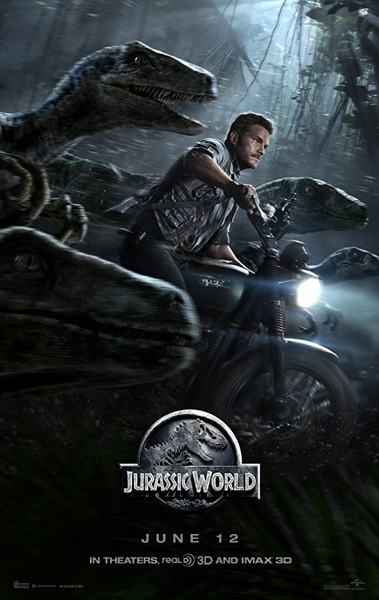
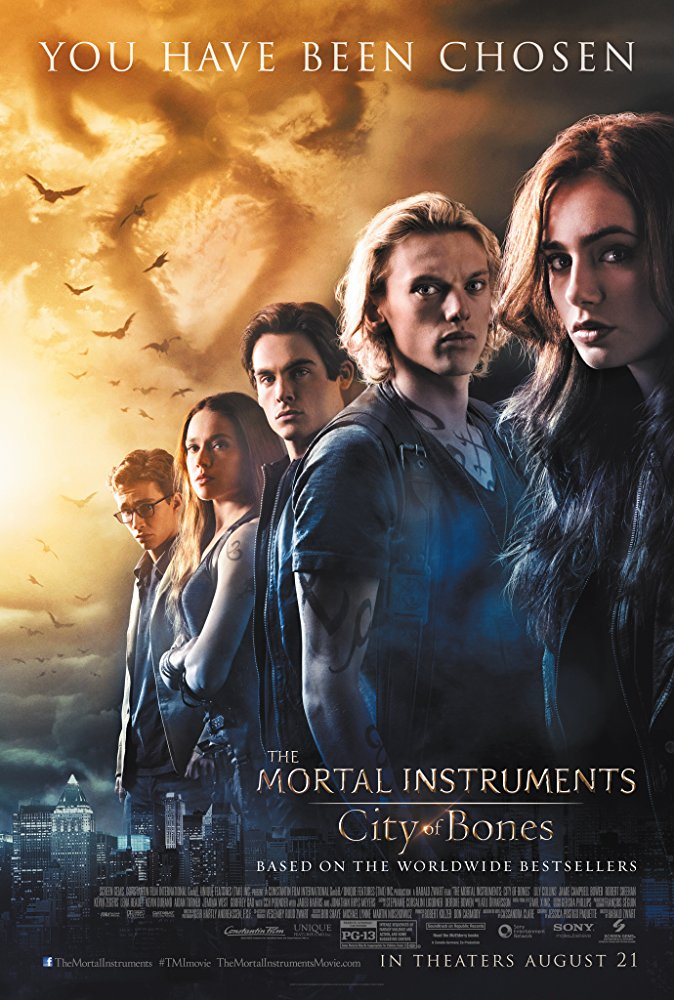
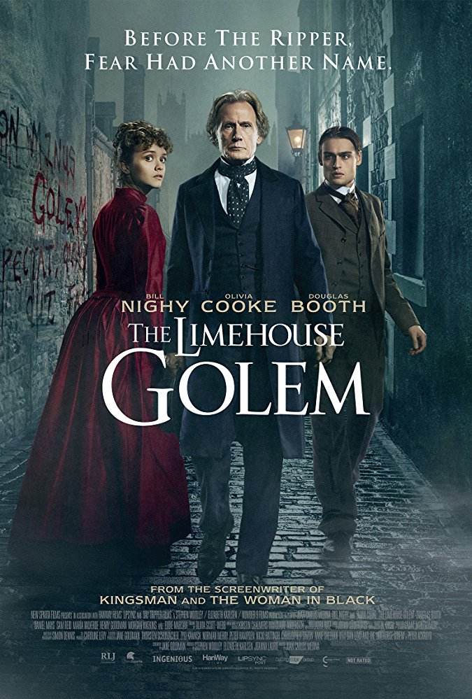
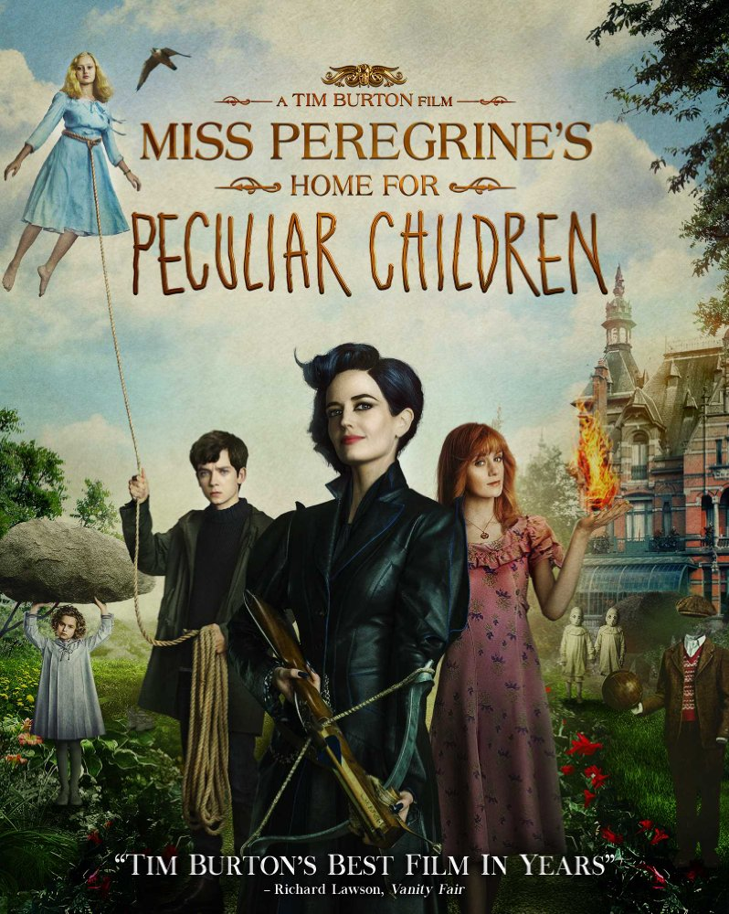

Movies
Me Before You
Genres: Drama | Romance
Director: Thea Sharrock
Writers: Jojo Moyes (based on the novel by), Jojo Moyes (screenplay by)
Stars: Emilia Clarke, Sam Claflin, Janet McTeer
Details:
Country: UK | USA
Language: English | French
Release Date: 7 July 2016 (Russia)
Storyline:
Lou Clark knows lots of things. She knows how many footsteps there are between the bus stop and home. She knows she likes working in The Buttered Bun tea shop and she knows she might not love her boyfriend Patrick. What Lou doesn't know is she's about to lose her job or that knowing what's coming is what keeps her sane. Will Traynor knows his motorcycle accident took away his desire to live. He knows everything feels very small and rather joyless now and he knows exactly how he's going to put a stop to that. What Will doesn't know is that Lou is about to burst into his world in a riot of color. And neither of them knows they're going to change each other for all time.
Suicide Squad
 Genres: Action | Adventure | Fantasy
Director:David Ayer
Writers:David Ayer
Stars:Will Smith, Jared Leto, Margot Robbie
Details:
Country: USA
Language: English | Japanese | Spanish
Release Date: 4 August 2016 (Russia)
Storyline:
It feels good to be bad...Assemble a team of the world's most dangerous, incarcerated Super Villains, provide them with the most powerful arsenal at the government's disposal, and send them off on a mission to defeat an enigmatic, insuperable entity. U.S. intelligence officer Amanda Waller has determined only a secretly convened group of disparate, despicable individuals with next to nothing to lose will do. However, once they realize they weren't picked to succeed but chosen for their patent culpability when they inevitably fail, will the Suicide Squad resolve to die trying, or decide it's every man for himself?
Genres: Action | Adventure | Fantasy
Director:David Ayer
Writers:David Ayer
Stars:Will Smith, Jared Leto, Margot Robbie
Details:
Country: USA
Language: English | Japanese | Spanish
Release Date: 4 August 2016 (Russia)
Storyline:
It feels good to be bad...Assemble a team of the world's most dangerous, incarcerated Super Villains, provide them with the most powerful arsenal at the government's disposal, and send them off on a mission to defeat an enigmatic, insuperable entity. U.S. intelligence officer Amanda Waller has determined only a secretly convened group of disparate, despicable individuals with next to nothing to lose will do. However, once they realize they weren't picked to succeed but chosen for their patent culpability when they inevitably fail, will the Suicide Squad resolve to die trying, or decide it's every man for himself?
Jurassic World

Genres: Action | Adventure
Director: Colin Trevorrow
Writers:Rick Jaffa, Amanda Silver
Stars:Chris Pratt, Bryce Dallas Howard, Ty Simpkins
Details:
Country: USA
Language: English
Release Date: 11 June 2015 (Russia)
Storyline:
22 years after the original Jurassic Park failed, the new park (also known as Jurassic World) is open for business. After years of studying genetics the scientists on the park genetically engineer a new breed of dinosaur. When everything goes horribly wrong, will our heroes make it off the island?
The Mortal Instruments: City of Bones

Genres:Action | Fantasy | Horror | Mystery | Romance
Director: Harald Zwart
Writers:Jessica Postigo (as Jessica Postigo Paquette), Cassandra Clare (based on the novel by)
Stars:Lily Collins, Jamie Campbell Bower, Robert Sheehan
Details:
Country: USA | Germany | Canada
Language: English
Release Date: 22 August 2013 (Russia)
Storyline:
Set in contemporary New York City, a seemingly ordinary teenager, Clary Fray, discovers she is the descendant of a line of Shadowhunters, a secret cadre of young half-angel warriors locked in an ancient battle to protect our world from demons. After the disappearance of her mother, Clary must join forces with a group of Shadow Hunters, who introduce her to a dangerous alternate New York called the Shadow World, filled with demons, warlocks, vampires, werewolves and other deadly creatures.
The Limehouse Golem

Genres: Horror | Thriller
Director: Juan Carlos Medina
Writers:Jane Goldman, Peter Ackroyd
Stars: Douglas Booth, Olivia Cooke, Sam Reid
Details:
Country: UK
Language: English
Release Date: 1 September 2017 (UK)
Storyline:
A series of murders has shaken the community to the point where people believe that only a legendary creature from dark times - the mythical so-called Golem - must be responsible.
Miss Peregrine's Home for Peculiar Children

Genres:Adventure | Drama | Family | Fantasy
Director: Tim Burton
Writers: Ransom Riggs, Jane Goldman
Stars: Eva Green, Asa Butterfield, Samuel L. Jackson
Details:
Country: UK | Belgium | USA
Language: English
Release Date: 6 October 2016 (Russia)
Storyline:
When Jacob discovers clues to a mystery that spans different worlds and times, he finds a magical place known as Miss Peregrine's Home for Peculiar Children. But the mystery and danger deepen as he gets to know the residents and learns about their special powers... and their powerful enemies. Ultimately, Jacob discovers that only his own special "peculiarity" can save his new friends.
HOME